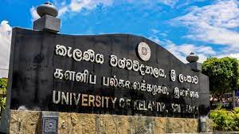
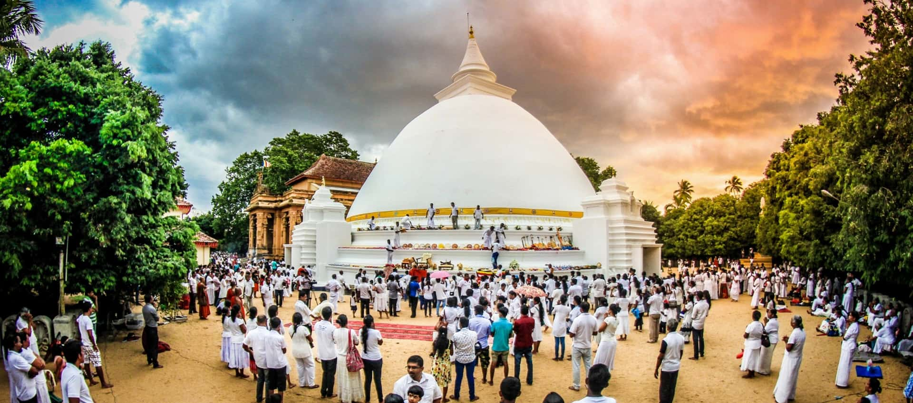

 My home town is in Kelaniya which is situated in the Western Province of Sri Lanka and is close to Wattala, Makola and Kadawatha. I live in the Dalugama area which is close to the Kandy Road. I live behind one of the best, oldest local universities is located here in Kelaniya. The University of Kelaniya contains roughly around 14,100 students, has 7 Faculties and 56 Departments. For more information on the university click on the image
The people in my town are very humble and happy people. My neighbours are always there if we need andy help and we are there for them too. All our neighbours know each other and is like a small community. There's a road that goes through the University called then Campus Road and many students from the university hold all kinds of fairs like art galleries on that road. Right next to Dalugama is Kiribathgoada where all the big supermarkets are placed. Therefore it is always bustling with people.
 Sri Lanka is multi-religious country and mainly consists of Buddhist people. In Kelaniya stands one of the oldest and most important Buddhist Temples, the Kelaniya Raja Maha Vihara. The temple has often been associated with the rise and fall of Ceylon / Sri Lanka, with the popular saying that as the Kelaniya temple rose, Sri Lanka rose and as it fell, the country and its administration fell. It has thus had a deep association with the political powers of the country. Kelaniya is also the home to many churches, mosques and kovils for the locals' place of worship. For more information on the temple click on the image.